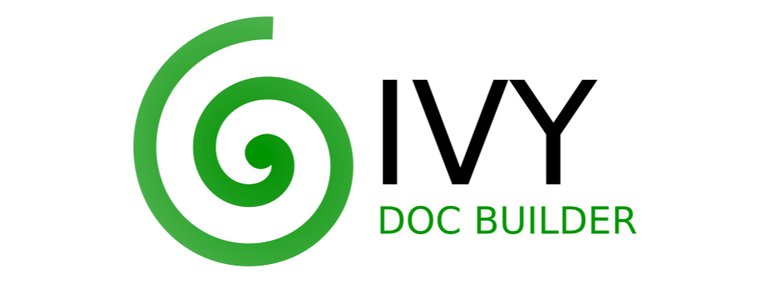
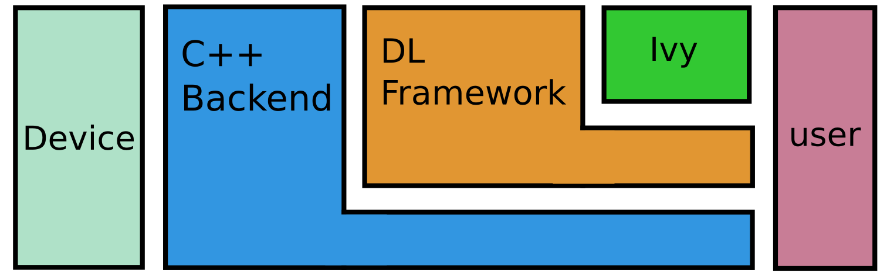

The templated deep learning framework, enabling framework-agnostic functions, layers and libraries.
Contents¶
Overview¶
What is Ivy?
Ivy is a templated deep learning framework which maximizes the portability of deep learning codebases. Ivy wraps the functional APIs of existing frameworks. Framework-agnostic functions, libraries and layers can then be written using Ivy, with simultaneous support for all frameworks. Ivy currently supports Jax, TensorFlow, PyTorch, MXNet and Numpy.
Ivy Libraries
There are a host of derived libraries written in Ivy, in the areas of mechanics, 3D vision, robotics, and differentiable gym environments. Click on the icons below for their respective github pages.


Quick Start
Ivy can be installed like so: pip install ivy-core
To get started, you can immediately use ivy with your deep learning framework of choice. In the example below we show how ivy’s concatenation function is compatible with tensors from different frameworks.
import jax.numpy as jnp
import tensorflow as tf
import numpy as np
import mxnet as mx
import torch
import ivy
jax_concatted = ivy.concatenate((jnp.ones((1,)), jnp.ones((1,))), -1)
tf_concatted = ivy.concatenate((tf.ones((1,)), tf.ones((1,))), -1)
np_concatted = ivy.concatenate((np.ones((1,)), np.ones((1,))), -1)
mx_concatted = ivy.concatenate((mx.nd.ones((1,)), mx.nd.ones((1,))), -1)
torch_concatted = ivy.concatenate((torch.ones((1,)), torch.ones((1,))), -1)
To see a list of all Ivy methods, type ivy. into a python command prompt and press tab.
You should then see output like the following:
{kind=link}
Based on this short code sample alone, you may wonder, why is this helpful? Don’t most developers stick to just one framework for a project? This is indeed the case, and the benefit of Ivy is not the ability to combine different frameworks in a single project.
So what is the benefit of Ivy?
In a Nutshell¶
Ivy’s strength arises when we want to maximize the usability of our code.
We can write a set of functions once in Ivy, and share these with the community so that all developers can use them, irrespective of their personal choice of framework. TensorFlow? PyTorch? Jax? With Ivy functions it doesn’t matter!
This makes it very simple to create highly portable deep learning codebases.
The core idea behind Ivy is captured by the example of the ivy.clip function below.

On it’s own this may not seem very exciting, there are more interesting things to do in deep learning than clip tensors. Ivy is a building block for more interesting applications.
For example, the Ivy libraries for mechanics, 3D vision, robotics, and differentiable environments are all written in pure Ivy. These libraries provide fully differentiable implementations of various applied functions, primed for integration in end-to-end networks, for users of any deep-learning framework.
Another benefit of Ivy is user flexibility. By keeping the Ivy abstraction lightweight and fully functional, this keeps you in full control of your code. The schematic below emphasizes that you can choose to develop at any abstraction level.

You can code entirely in Ivy, or mainly in their native DL framework, with a small amount of Ivy code. This is entirely up to you, depending on how many Ivy functions you need from existing Ivy libraries, and how much new Ivy code you add into your own project, to maximize it’s audience when sharing online.
Where Next?¶
So, now that you’ve got the gist of Ivy, and why it’s useful. Where to next?
This depends on whether you see yourself in the short term as more likely to be an Ivy library user or an Ivy library contributor.
If you would like to use the existing set of Ivy libraries, dragging and dropping key functions into your own project, then we suggest you dive into some of the demos for the various Ivy libraries currently on offer. Simply open up the main docs, then open the library-specific docs linked on the bottom left, and check out the demos folder in the library repo.
On the other hand, if you have your own new library in mind, or if you would like to implement parts of your own project in Ivy to maximise it’s portability, then we recommend checking out the page Writing Ivy in the docs. Here, we dive a bit deeper into the Ivy framework, and the best coding practices to get the most out of Ivy for your own codebases and libraries.